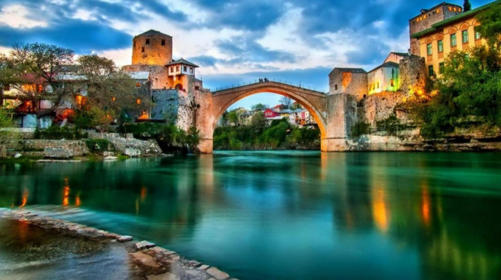
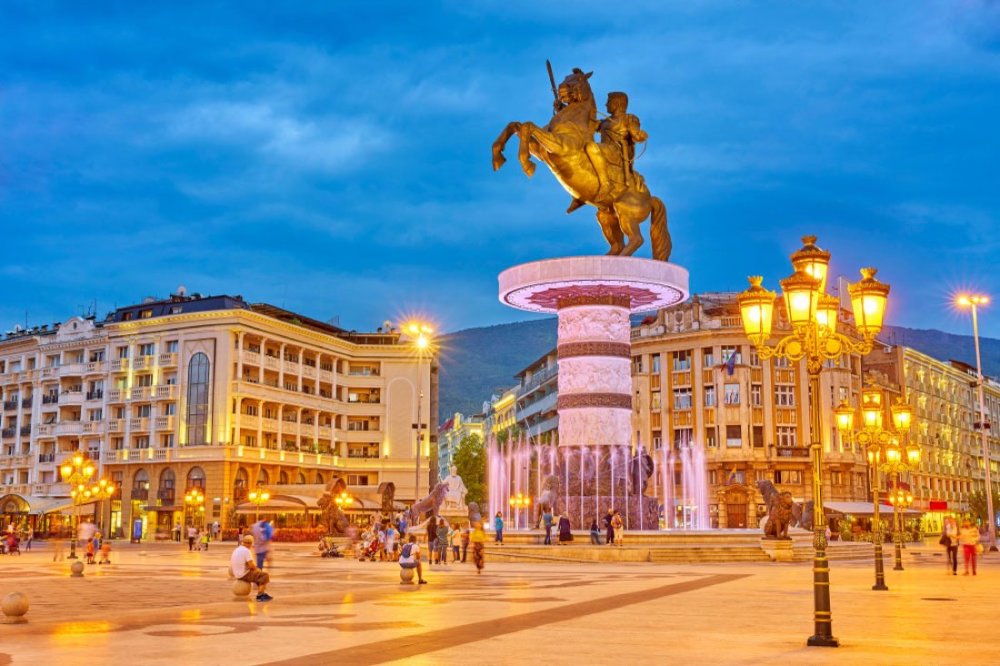
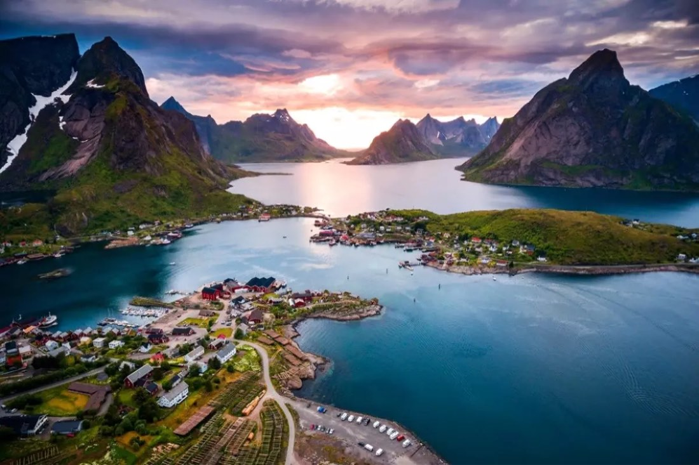

AvrupaGüncel
AvrupaGüncel
Büyük Balkanlar Turu
Avrupa7 günVizesizGüncel
Tur bilgileri
- Tarih
- 13.08.2027 – 19.08.2027
- Süre
- 7 gün
- Güzergâh
- Kosova, Makedonya, Arnavutluk, Karadağ, Bosna Hersek
- Otel
- 5 Yıldız
- Vize
- Vizesiz
- Ulaşım
- UÇAK
- Havayolu
- THY
Rota haritası
Şehir etiketine dokunun; programın o günü açılsın.
Fiyatlar
Aşağıdaki fiyatlar önceki dönem içindir. Güncel fiyat, tarih ve kontenjan için bizi arayın.
| Tek Kişilik Odada Kişi Başı | €1.400 |
|---|---|
| İki Kişilik Odada Kişi Başı | €1.200 |
| Üç Kişilik Odada Kişi Başı | €1.200 |
| 0 - 2 Yaş | €300 |
|---|---|
| 2 - 6 Yaş | €1.050 |
| 6 - 12 Yaş | €1.150 |
* 12 yaş dahil değildir.
* 0 - 6 yaş çocuk fiyatları yataksızdır.
Tur programı
1.Gün
İstanbul Priştine Prizren Üsküp
İstanbul Yeni Havalimanı Dış Hatlar Terminali Gidiş Katı'nda 04.45'de buluşuyoruz. Check-in ve pasaport işlemlerini müteakip THY'nin TK1017 sefer sayılı 07.45 uçuşu ile Priştine şehrine hareket ediyoruz (1sa 40dk). Varış: 08.20. Priştine'ye varışımızın ardından Kosova'nın Prizren şehrine doğru yola koyuluyoruz (70 km). Fatih Sultan Mehmed’in 1455'de ayak bastığı, şehir girişine Namazgah inşa ettirdiği, ordusuyla Cuma namazına durduğu ve adına Pür Zerin dediği şehre giriş yapıyoruz. Bayraklı Camisi, Mehmed Paşa Külliyesi ve Medrese, Gazi Mehmed Paşa Hamamı, Halveti Dergahı, Şadırvan Meydanı, Prizren Köprüsü göreceğimiz yerler arasındadır. Kosova’nın başkenti Priştine'ye doğru yola çıkıyoruz. Priştine yakınlarındaki Obiliç bölgesinde belki de tarihimizin en önemli perdelerinden birini aralıyor, bu toprakların ve insanının bize bağlılığının sebebine bir kez daha şahit oluyor, bir torun vazifesini burada ifa ediyor ve Osmanlı tarihinde muharebede şehit düşen ilk ve son padişah, 1. Sultan Murat Hüdavendigar’ın iç organlarının ve kalbinin defnedildiği türbesini ziyaret ediyoruz. Bu anlamlı ziyaret sonrasında, Makedonya'nın başkenti Üsküp'e hareket ediyoruz (95 km). Akşam yemeği sonrası konaklama otelimizde. 5* Bushi Hotel, 5* Aleksandar Palace Hotel vb.
2.Gün
Üsküp Kalkandelen Ohrid / Struga
Otelde alacağımız kahvaltının ardından Osmanlı İmparatorluğunun 500 seneden fazla hüküm sürdüğü ve Müslüman nüfusuyla eski zamanları yaşatmayı başarmış Makedonya’nın en gözde şehirlerinden Üsküp’te yapacağımız şehir turumuzda tarih boyunca şehrin ticari faaliyetlerinin merkezi olan ve günümüzde de önemini yitirmemiş Taş Sokaklar, tarihi binaları ile Türk Çarşısı, Kuyumcular Sokağı, Üsküp Kalesi (uzaktan), Vardar Nehri,16. yy.'dan kalma Taş Köprü, Türk ve Yahudi Mahallesi, Davut Paşa Külliyesi, Mustafa Paşa Camisi, İsa Bey Camisi, Çifte Hamam, Sulu Han, Kapan Han, Kurşunlu Han, Saat Kulesi, Üsküp Meydanı ve meydandaki Büyük İskender’in devasa heykeli, Sar Samuel ve Kiril Metod heykelleri görülecek yerler arasındadır. Kanuni Sultan Süleyman döneminde yapılmış şirin bir kasaba şehri olan Kalkandelen’e (Tetovo) hareket ediyoruz (50 km). Dönemin buradaki Bektaşî merkezi Harabati Baba Tekkesi ve Alaca Camisi gezimizin ardından Ohrid / Struga şehrine hareket ediyoruz (80 km). Akşam yemeği sonrası konaklama otelimizde. 5* Izgrev Hotel vb.
NOTLAR:
Otel müsaitliğine göre konaklama Ohrid veya Struga şehrinde olmaktadır.
3.Gün
Ohrid / Struga
Otelde alacağımız kahvaltının ardından Müslüman Arnavutların nüfusun çoğunluğunu oluşturduğu bu şehirdeki turumuzda Kara Drim Nehri üzerine kurulu Şairler Köprüsü, Şairler Parkı, bu parkta 1974 yılında ünlü şair Fazıl Hüsnü Dağlarca tarafından dikilen dilek ağacı, Çarşı ve Hasan Baba Tekkesi göreceğimiz yerler arasındadır. Gezimizin ardından Ohrid şehrine hareket ediyoruz (15 km). Osmanlı’nın Balkanlar’daki önemli üslerinden biri olmuş tarihi Ohrid şehir turumuzda Kiril Alfabesi’ni geliştirmiş olduklarına inanılan, 9. yüzyıl Bizans keşişleri Aziz Kirillos ve Metodios Anıtı, Ali Paşa Camisi, Halveti Dergahı, Aya Sofya Kilisesi, Roma döneminden kalma Antik Tiyatro, Samoil Kalesi (uzaktan), Çınar Meydanı ve Ohrid Pazarı göreceğimiz yerler arasındadır. Serbest zamanın ardından akşam yemeğini yerel restoranımızda alabalık menüsü olarak aldıktan sonra konaklama otelimizde. 5* Izgrev Hotel vb.
4.Gün
Ohrid / Struga St. Naum İşkodra
Otelde alacağımız kahvaltının ardından Ohrid'e yarım saat uzaklıkta bulunan St. Naum'da bölgenin en önemli isimlerinden olan St. Naum’un 16 y.y. sonunda inşa etmiş olduğu manastırı geziyoruz. Gezimizin ardından Elbasan üzerinden konaklamak için Arnavutluk'un bir şehri olan İşkodra'ya hareket ediyoruz (225 km). Akşam yemeği sonrası konaklama otelimizde. 5* Golden Palace Hotel, 5* Grand Europa Hotel, 4* Ramada Podgorica Hotel vb.
NOT: İşkodra şehrine sadece konaklama için gidilmektedir.
5.Gün
İşkodra Budva Kotor Trebinje
Otelde alacağımız kahvaltının ardından Karadağ’ın en önemli iki turizm kenti olan Budva ve Kotor ziyaretleri için ilk durağımız Budva'ya doğru yola çıkıyoruz (85 km). Labirent şeklinde Adriyatik Denizi'nin kıyısında bulunan bu şehir gezimizde Ortodoks Kilisesi ve Eski Orta Çağ Evleri'ni gezdikten sonra Kotor'a hareket ediyoruz (20 km). Kotor'a varışımızın ardından yapılacak şehir turumuzda Un Meydanı, Ortodoks Meydanı, Silah Meydanı, Utanç Duvarı, Ortodoks Kilisesi ve Katolik Katedrali göreceğimiz yerler arasındadır. Gezimizin ardından Trebinje şehrine hareket ediyoruz (80 km). Akşam yemeği sonrası konaklama otelimizde. 4* Nar Hotel, 4* Bellevue Hotel, 4* SL Industry Hotel vb.
NOT: Trebinje şehrine sadece konaklama için gidilmektedir. Otel müsaitliğine göre konaklama Mostar şehrinde de olabilmektedir.
6.Gün
Trebinje Mostar Saraybosna
Otelde alacağımız kahvaltının ardından Mostar'a hareket ediyoruz (115 km). Varışta yapacağımız şehir gezimizde Poçitel Türk Köyü, Buna Nehri kaynağının hemen yanı başında olan Derviş (Alperenler Tekkesi) tekkesi olan Blagay Tekkesi, UNESCO Dünya Kültür Mirasları listesinde olan Mostar Antik Kenti, Osmanlı yapımı Mostar Köprüsü göreceğimiz yerler arasındadır. Serbest zamanın ardından Saraybosna'ya hareket ediyoruz (120 km). Akşam yemeği sonrası konaklama otelimizde. 5* Hills Hotel vb.
7.Gün
Saraybosna İstanbul
Otelde alacağımız kahvaltının ardından Saraybosna'nın su kaynağı Igman Dağı'nın eteklerindeki Vrelo Bosna, savaş zamanı iki buçuk yıl şehrin bütün ihtiyaçlarının karşılandığı şehre giriş çıkışların yapıldığı Tünel ve müzesi, Aliya Izzetbegoviç'in de içinde yattığı şehitlik, Birinci Dünya Savaşı'nın çıktığı Latin (Hünkar) Köprüsü, Sebil, Kütüphane, İnat Evi, Osmanlı döneminden beri eğitime ara vermeden devam eden Kurşunlu Medresesi, Kanuni Sultan Süleyman'ın halasının oğlu Gazi Hüsrev Bey'in Camisi ziyaretlerini müteakip Başçarşı'da alışveriş için serbest zaman sonrası dönüş için Saraybosna Havalimanı'na hareket ediyoruz. Check-in ve pasaport işlemlerini müteakip THY'nin TK1026 sefer sayılı 20.40 uçuşu ile İstanbul'a hareket ediyoruz. Varış: 23.40.
Bir başka organizasyonda buluşmak üzere…
Fiyata dahil olanlar
- THY ile İstanbul / Priştine - Saraybosna / İstanbul gidiş-dönüş ekonomi sınıfı uçak bileti ve vergileri
- 6 gece 5* ve 4* kalitesinde otellerde konaklama
- Sabah kahvaltıları otelde
- set menü akşam yemekleri otelde veya restoranda
- Kotor Kalesi
- Blagay Tekkesi
- Savaş Tüneli
- Vrelo Bosna giriş ücretleri
- Programda adı geçen tüm transferler
- Ülkeler arası geçiş vergileri
- Türkçe rehberlik hizmeti
- Budva ve Kotor şehirlerinde yerel rehberlik hizmeti
- Kotor ayakbastı ücreti
- Seyahat sigortası
- Tüm yurt dışı yerel vergiler ve Türkiye KDV
Fiyata dahil olmayanlar
- Diğer şehirlerden İstanbul'a iç hat bağlantı uçuşu ücreti
- İlk gün kahvaltı
- tüm öğle yemekleri ve tüm yemeklerde alınacak 2. ve ekstra içecekler
- Yurt dışı çıkış harcı
- Program dışı talep edilecek turlar
- Otel ekstraları (oda servisleri
- telefon vb.)
- bahşiş
- Programda dahil olduğu açıkça belirtilmemiş her türlü hizmet
Benzer turlar
AvrupaGüncel
AvrupaGüncelBüyük Balkan Turu
Kosova, Makedonya, Arnavutluk, Karadağ, Bosna Hersek
Güncel tarih ve fiyatiçin arayın
İncele →
AvrupaGüncel